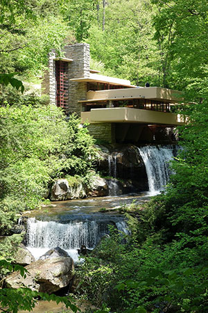

By: FRANK LLOYD WRIGHT

Fallingwater or Kaufmann Residence is a house designed by architect Frank Lloyd
Wright in 1935 in rural southwestern Pennsylvania, 43 miles (69 km) southeast of Pittsburgh.
The home was built partly over a waterfall on Bear Run in the Mill Run section of Stewart Township, Fayette County, Pennsylvania,
in the Laurel Highlands of the Allegheny Mountains. The house was designed as a weekend home for the family of Edgar J. Kaufmann,
owner of Kaufmann's department store.
Time cited it after its completion as Wright's "most beautiful job";it is listed among Smithsonian's Life List of 28 places
"to visit before you die." It was designated a National Historic Landmark in 1966. In 1991, members of the American
Institute of Architects named the house the "best all-time work of American architecture" and in 2007,
it was ranked 29th on the list of America's Favorite Architecture according to the AIA.